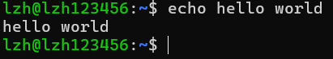

Linux
相关链接：
一、核心基础
1.1 内核和发行版
1.1.1 内核和发行版
Linux 只是一个操作系统内核，要构建一个完整可用的操作系统，需要加入大量的用户空间软件，最终构建成五花八门的发行版。
这句话可能仍然有点难理解，我们用家喻户晓的 Android 系统来类比。 Linux 内核可以类比为 Android 系统底层所使用的内核，而各种 Linux 发行版，则可以粗略类比为 HyperOS、OriginOS、ColorOS 等厂商定制系统。
1.1.2 内核之间的区别
Linux 内核由 Linus Torvalds 发起，并由全球开发者共同维护。它会不断发布新的版本，同时形成主线版本、稳定版本和长期支持版本等不同分支。不同内核版本主要在硬件支持、驱动程序、性能调度、安全机制和文件系统功能等方面存在差异。
不过，对于初学者和普通用户来说，这些差异通常不会被直接感知。因此，一般只需要使用发行版默认提供的内核，不必在入门阶段研究内核版本和分支。
1.1.3 发行版之间的区别
不同 Linux 发行版就像不同厂商定制的 Android 系统：底层核心相近，但预装软件、管理工具、更新策略、默认配置和目标用途有所不同。
不同发行版之间的基础知识和大多数常用软件相通，切换发行版的学习成本通常不高，因此后期可以根据自己的需求选择喜欢的发行版。
1.2 Shell 和命令
对于图形化操作系统例如 Windows 和 macOS，我们的大多数使用场景都是在图形操作界面（GUI）完成的， 而对于 Linux 来说，它最原汁原味的使用方式是在命令行界面（CLI）完成的。 在命令行界面中，我们不再通过鼠标单击按钮，而是输入命令来告诉计算机要做什么，计算机执行完后将结果返回用户。
1.2.1 Shell 的基本交互
用户输入的命令由 Shell（命令解释器）负责解析，并由它直接执行或调用相应程序执行。
Shell 是一个程序，在 Ubuntu 里它默认是 bash，它是目前最常见的 Linux Shell 之一。
（1）命令解释器的交互方式
bash 在等待用户输入命令时，会显示出命令提示符（Command Prompt），它会同时展现当前用户名、该计算机的名称、当前的工作目录。
Ubuntu 默认提示符的结构：

尝试在终端里键入 echo 命令来熟悉一下交互逻辑，echo 命令会将它后面的内容输出到终端，可以理解为“复读”。

（2）执行耗时的命令
例如执行 sleep 3 后，该命令会“干等” 3 秒。
这是因为默认情况下 Shell 会等待当前在前台运行的命令结束，才会准备接受下一条命令的输入，没有出现命令提示符说明上一条命令还没有运行完。
（3）中断运行中的命令
Ctrl + C
1.2.2 命令的基本结构
一条最基本、最常见的 Linux 命令通常具有如下结构：
命令名称 [命令参数]...
- 命令名称指定你想要调用的命令，它是大小写敏感的，即
ls和LS是不同的。 - 命令参数则控制具体的调用行为以及提供数据，命令参数可以有多个。
- 命令名称和每个命令参数之间通常要用空格隔开，空格的数量不限。
1.2.3 典型的命令参数语法
1.2.4 高效地键入命令
（1）历史记录
在终端键入的命令是有历史记录的，可以用 ↑ 和 ↓ 来导航历史命令
（2）TAB 键补全
通过 TAB 键即可进行自动补全（就像 IDE 里一样）。通常来说，TAB 可以补全命令名称和文件路径；如果系统为对应命令提供了专门的补全支持，还可以补全命令参数。
如果当前输入存在多个候选项，例如以 /usr/l 开头的路径有两个，可以连续按两次 TAB 键，终端就会列出所有候选项。继续输入几个字符，消除歧义后，再按 TAB 键即可完成补全。
（3）光标导航
有时候我们会要输入超长的命令，此时如果要修改命令，可不要按死左右方向键等光标慢慢移动了，这实在太慢了。光标是有快速导航的方式的：
- Home：光标移动到命令头
- End：光标移动到命令尾
- Ctrl + ←：光标向左移动一个单词，是否可用取决于终端是否支持
- Ctrl + →：光标向右移动一个单词，是否可用取决于终端是否支持
（4）复制粘贴
需要注意，终端里的复制粘贴快捷键有所不同，不同终端会有差别，但是大多数都支持以下一组快捷键：
- Ctrl + Insert：复制选中的文字
- Shift + Insert：粘贴文字
（5）清屏
Ctrl + L 或者命令 clear
1.2.5 获取命令的文档
通常来说，Linux 命令约定俗成在 --help 下提供文档。
假设你突然忘记了 ls 命令的用法，可以使用 ls --help 来获得它的文档。另外，很多命令还会提供详细手册（manual），使用 man 命令名 就可以查看。
1.3 目录、文件和路径
1.3.1 Linux 目录结构
Linux 和 Windows 目录结构的重要区别有：
| Linux | Windows | |
|---|---|---|
| 目录分隔符 | 正斜杠 / |
反斜杠 \ |
| 根目录 | 目录树仅有一个根节点 / |
每个盘符都有独立的根目录，如 C:\、D:\ |
| 大小写敏感 | 通常区分大小写，File.txt 和 file.txt 是两个文件 |
默认不区分大小写，二者通常视为同一文件 |


用户的家目录在 /home/用户名 下，在家目录进行操作一般不会影响系统。
1.3.2 路径的写法
绝对路径必须以 / 开头
相对路径，用 .. 代表当前工作目录的上一层，用 . 代表当前工作目录，相对路径不能以 / 开头。
另外，Linux 对用户家目录还有特殊记号 ~，等价于 /home/<用户名>
1.3.3 切换与查看目录
要在 Linux 目录树中移动，核心的命令是 cd，另外 ls 和 pwd 命令可以起辅助作用。
（1）cd 命令：切换目录 change directory
- 用途：切换工作目录
- 核心参数：
- 位置参数：想切换的目标目录，若不传则切换到家目录
此外，cd - 是一个特殊的调用方式，通过传入减号 - 执行，可以回到上一次所在的目录
（2）ls 命令：打印目录 list
- 用途：打印指定目录下的内容
- 核心参数：
- 位置参数：想打印的目标目录，不传则打印当前工作目录
-a：打印隐藏内容（即 . 开头的对象）-l：以详细列表形式打印-F：在文件名后显示类别指示符-h：以更直观的方式显示文件大小
补充知识：Linux 中以 . 开头的文件或目录叫隐藏文件或目录，如 .cache、.config、.gitignore 等。
（3）pwd 命令：打印当前工作目录 print working directory
pwd 命令很简单，无需任何参数执行后，它就会返回当前的工作目录（绝对路径）。
1.3.4 查看与运行文件
（1）查看文件
- 命令：
cat（意为 concatenate） - 用途：查看文件、连接文件
- 核心参数：
- 位置参数：想要查看的文件的路径，传多个则把多个文件依次连接起来并输出
需要注意的是，不要使用 cat 打开超大的文件，由于它会把整个文件完整地输出在终端，如果文件太大可能会把终端卡住，如果真卡住了就按 Ctrl + C 中断
另外，也不要用 cat 打开二进制、图片、压缩包等非纯文本，因为它不会识别文件格式，只是直接把其中的原始数据输出到终端，因此只会喷出一大堆乱码。
（2）运行文件
如果有些文件是二进制文件（可执行程序）或者脚本文件，并且有执行权限（在下文 1.8.4 节会介绍），那么它是可以通过 Shell 调用运行的。直接在 Shell 中指定它的路径就可以运行了，例如：
# 假设调用的文件都存在
./main
./run.sh
/data/my-program
/opt/my-script.sh
# 参数根据具体的程序传递即可
./my-app --host 0.0.0.0 --port 8000
/data/main --config /data/config.json
1.3.5 新建目录和文件
（1）mkdir 命令：新建目录 make directory
- 用途：新建目录
- 核心参数：
- 位置参数：想要新建目录的路径，可以传多个，一次性新建多个目录
-p：父目录不存在时一并创建，可用于一次性新建多级目录
# 若当前工作目录为 /home/chriskim
mkdir test # 新建 /home/chriskim/test/
mkdir /data/docs # 新建 /data/docs/
mkdir a b c # 新建 /home/chriskim/a/, /home/chriskim/b/, /home/chriskim/c/
mkdir -p x/y/z # 新建 /home/chriskim/x/, /home/chriskim/x/y/, /home/chriskim/x/y/z/
（2）touch 命令：新建文件
- 常见用途：新建空文件
- 核心参数：
- 位置参数：想要新建文件的路径，可以传多个，一次性新建多个文件
1.3.6 查找文件和目录
find 会从指定的目录开始，递归检查其中的文件和子目录。
find [起始目录] [查找条件]
最核心的[查找条件]有：
-name 名称：按照名称查找，区分大小写-iname 名称：按照名称查找，不区分大小写-type f：只查找普通文件-type d：只查找目录-maxdepth n：最多向下查找 n 层目录
# 在当前目录及其子目录中查找 config.json
find . -name "config.json"
# 在家目录及其子目录中查找所有 .txt 文件
find ~ -name "*.txt"
# 不区分大小写查找所有名称以 readme 开头的对象
find . -iname "readme*"
# 在 /data 中只查找名为 checkpoints 的目录
find /data -type d -name "checkpoints"
# 在 /data 中只查找 .pt 文件
find /data -type f -name "*.pt"
# 只查找当前目录及其下一层，不再继续深入
find . -maxdepth 1 -name "*.txt"